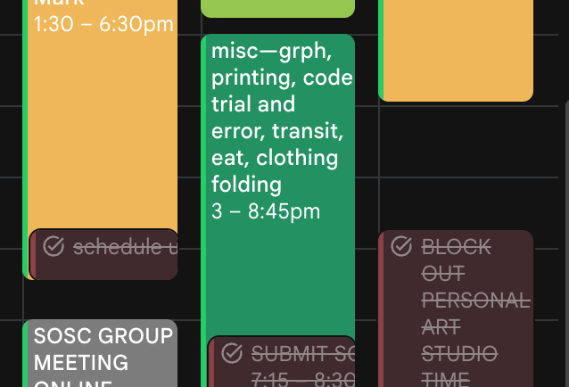

Time Management
Sections:
My Own Time Management
Techniques: " Time Blocking "
Techniques: " Lesser Mental Resistance "
My Own Time Management
You’d think that, in a website about time management, the page titled “Time Management” would be the only one necessary, right? I’d personally disagree—this webpage is specifically about techniques that I and other people make use of, with the arbitrary label of being for “time management” being more so for simplification’s sake (at least for my case). Either way, my writings here will focus on things to keep in mind when you reflect on how to manage your time—things to try, things to use, and things that are used by the many.
I like to manage my own time in both the written word and through simple spontaneity. In the written word, I like to plan out bigger, non-negotiable, or premeditated plans such that I won’t forget them about them when going through my day-to-day, which is, some days, more mentally taxing than others; my written word almost acts as insurance to carry my plans through times where I may not be able to fully carry them myself. I like to Google Calendar to write my tasks down—I like having an application that acts as a sort-of archive of my plans that I can open at any time with free reign over its content—all I need is my phone and a network connection. I like to color code my calendar—I feel like having different visual qualities to the different tasks/blocks of time I establish for myself help me in properly differentiating between the different tasks as I go on with my day.

Continuing on, I also like to use media that let me have visual/linguist control over my content to help myself plan—notetaking applications, giant sketchbooks, visual assembly applications, et cetera. For instance, I like to use Adobe Illustrator or Obsidian to compile notes into visual form, as it helps me get a better sense of how much work I need to do—or how much I have done—which helps me pace myself for the rest of what I am tasked with doing. I always have some sort-of visual logic to my plans—whether that be using indentation to denote things that are part of the same list, or using different colors to dictate different ways-of-thinking.

To account for the bursts of spontaneity that I have on the daily, I like to use quick note-taking methods—sticky notes or digital writing applications—to quickly write down my thoughts as reminders for my future self. I enjoy the physicality of my sticky notes—being able to stick them to many objects ensures that I’ll be able to place them in a place that I can see them in, which is extra comforting if I cannot notate dates or times that the task I intend for them to remind me of would take up. Digital note taking applications are good alternatives, though I much prefer sticky notes as, again, I can place them in places where I am sure to physically see them.

Techniques: "Time Blocking"
Moving on, one of the more well-known methods of time management is time blocking, something covered in user AiotexOfficial’s Reddit post, “How I made time blocking finally work for my brain” where they figure out how to successfully incorporate the technique into their life. I could imagine that, for those who have attempted to block their time before, they would run into some issue or another, whether that would be skipping tasks, delaying other tasks, or simply getting more stressed than if they were to simply proceed without the technique. That’s the thing about strict, societally popular techniques—you simply never know resistant they may be towards your brain until you try them, something that the Reddit user understood in themselves through altering the core of what the technique involved to better-incorporate it in their own lifestyle.
Time blocking, as the name suggests, involves blocking out chunks of one’s time to usually be dedicated to whatever its user commits to doing to proportionately manage one’s time in relation to that which they need to get done. AiotexOfficial, in their post, says that it helped them get a rough picture of their day in linear sequence, though they had to make a version of the strategy that better accounts for the spontaneity of real life—one where they write down their tasks linearly and move them according to what life demanded from them.
Much like AiotexOfficial, I, too, don’t follow the “standard vision” of what time blocking looks like, with my methods differing depending on my location. At home and on the transits, I block out bigger, more generalized “chunks” of time—time where I understand that I may not have full focus on my task due to external factors (being unable to work while travelling, tending to important home matters, et cetera), so I compromise by filling this time with lighter tasks, like emails, finances, or studying. All things considered, I think time blocking is a good tool to follow so long as you are able to adapt it to your own needs.

Productivity-based Reddit PostTechniques: "Lesser Mental Resistance"
Something else that I consider important is the idea of “lesser mental resistance” as, even if it isn’t explicitly a technique, I’d still lump it in with other techniques by virtue of being helpful with how you go about living your life. “Savvy Solutions”, in their podcast episode, touch on various techniques that I would lump under providing oneself with “lesser mental resistance”, like stealth de-cluttering, macro/micro actions, and “home organization tools”, which I consider to be valid and effective techniques depending on your context. Though I’ve heavily generalized that which I’ve combined under “home organization tools”, I think the topic as a whole is quite important to think about; by “home organization tools”, I mean the things that you do to set yourself up for “physical success”—which would, in turn, make it easier to start doing things.
For instance, say you intended to vacuum your living space after a day-long outing. If you’re anything like me and forget to do things if they aren’t directly in your view, then it might be wise to make sure to leave your vacuum next to the entrance to your home before you leave so you don’t forget to vacuum when you come home. Setting yourself up for “physical success” might not be something you need, but I feel as if that which it revolves around can be widely applicable to many things—simply, making sure what you need to do remains easy for you to do.
Time Management Podcast